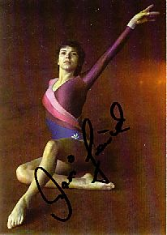

Maxi Gnauck (GDR)
1980 Olympic AA Silver Medalist
3-Time
World UB Champion

|
Medal Total
- Olympic Games: 1 Gold, 1
Silver, 2 Bronze
- World Championships: 5
Gold, 1 Silver, 3 Bronze
- World Cup: 3 Gold, 1
Silver, 1 Bronze
- European Championships: 5
Gold, 3 Silver, 1 Bronze
|
Maxi was born on October
10, 1964 in Berlin. Her parents were expecting a boy (they planned to name
him Max), so when the baby turned out to be a girl, an "i" was added
to the name. Maxi's mother brought her to a gymnastics center in their
neighborhood when Maxi was 5. By age 8, Maxi had won her first medals at
the Kreisspartakiade, and at age 9 she transferred to SC Dynamo Berlin where she
was coached by Jurgen Heritz. Considered one of the best UB workers of her time, Maxi was also a
super tumbler. She was one of the first girls to perform a triple twist on
FX.
Maxi officially announced her retirement in April
1986 and began studying to become a coach. In 1988, while working as an
aide at a children's summer camp by the Baltic Sea, Maxi was severely injured
while sliding down a water slide. She broke her C5 vertebra and was nearly
paralyzed. Three vertebrae were later reinforced with a metal plate.
Since 1993 Maxi has worked as a
full-time coach at the Norderstedt Gymnastics Center in Hamburg. She was inducted into the International Gymnastics Hall of
Fame in 2000, the first German gymnast to be awarded that honor.
-
- Competition Results
-
- 1977
- GDR Children's Spartakiade: 1st AA
- GDR Junior Championships: 5th AA
- Jr. GDR-TCH Dual Meet: 1st Team, 1st AA
Jr. Friendship Tournament (Druzhba): 19th AA
-
- 1978
- Chunichi Cup: 4th AA
- Cottbus International: 3rd AA, 2nd V
DTV Cup: 5th AA
- GDR-HUN Dual Meet: 1st Team, 3rd AA
- Jr. Friendship Tournament (Druzhba):
2nd Team, 3rd AA, 2nd FX, 4th UB, 6th V
-
- 1979
- Cottbus International: 1st AA
- European Championships: 6th AA, 2nd V, 3rd UB
- GDR Championships: 2nd AA
- GDR Cup: 4th AA
- GDR-NOR-SWE Tri-Meet: 1st Team, 1st AA
- World Championships (Fort Worth): 3rd Team,
2nd AA, 1st UB, 4th FX, 6th V, 6th UB
-
- 1980
- Cottbus International: 1st AA, 1st UB, 1st B, 1st FX
- GDR Championships: 4th AA
- GDR-HUN Dual Meet: 1st Team, 1st AA
- Olympic Games: 3rd Team, 2nd AA, 1st UB, 3rd
FX, 4th B, 6th V
- World Cup: 2nd AA, 1st UB, 1st FX,
6th V
-
- 1981
- Cottbus International: 1st AA, 1st UB, 1st FX, 2nd V,
2nd B
- European Championships: 1st AA, 1st UB, 1st B,
1st FX, 2nd V
- GDR Championships: 1st AA
- GDR-NOR-SWE Tri-Meet: 1st AA
- World Championships (Moscow): 3rd Team, 77th AA (prelims),
1st V, 1st UB,
1st B
-
- 1982
- GDR Championships: 1st AA, 1st V, 1st UB, 1st FX
GDR-HUN Dual Meet: 1st Team, 1st AA
- World Cup: 5th AA, 1st UB, 3rd FX,
7th V
-
- 1983
- Chunichi Cup: 4th AA, 1st FX
- Cottbus International: 1st V, 1st FX, 3rd AA
Tokyo Cup: 1st UB, 1st FX
- World Championships (Budapest): 3rd
Team, 7th AA, 1st UB, 4th V, 4th B
-
- 1984
- Cottbus International: 4th AA, 1st V, 1st
FX
- CSSR Spartakiade (Olomouc): 3rd AA, 1st
UB, 1st FX, 3rd V, 5th B
- DTB Cup: 1st AA, 1st UB, 1st FX, 2nd V,
5th B
- GDR Championships: 1st AA, 1st UB, 1st FX, 3rd V
-
- 1985
- Cottbus International: 2nd AA, 1st FX, 2nd V
- European Championships: 2nd AA, 1st
UB, 4th V
-
This page was created on November 10, 1997 and was
last updated on August 23, 2013.
© Gymn Forum